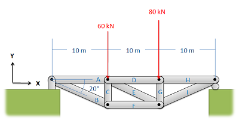
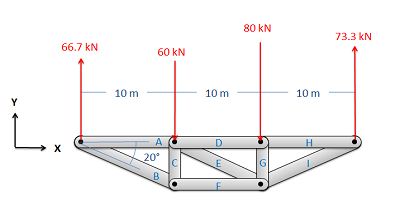
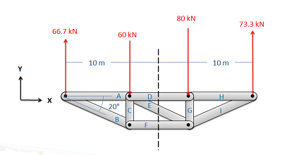
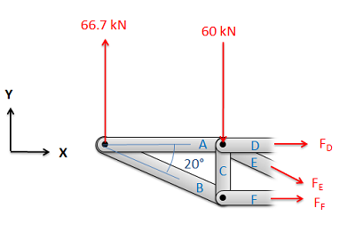

The method of sections is a process used to solve for
the unknown forces acting on members of a truss. The
method involves breaking the truss down into individual sections and
analyzing each section as a separate rigid body. The method of sections
is usually the fastest and easiest way to determine the unknown forces
acting in a specific member of the truss.
Using the Method of Sections:
The process used in the method of sections is outlined below:
In the beginning it is usually useful to label the members in your truss. This will help you keep everything organized
and consistent in later analysis. In this book, the members will be
labeled with letters.

The first step in the method of sections is to label each member.
Treating the entire truss structure as a rigid body, draw a free
body diagram, write out the equilibrium equations, and solve for the
external reacting forces acting on the truss structure. This analysis
should not differ from the analysis of a single rigid body.

Treat the entire truss as a rigid body and solve for
the reaction forces supporting the truss structure.
Next you will imagine cutting your truss into two separate
sections. The cut should travel through the member that you are
trying to solve for the forces in, and should cut through as few
members as possible (The cut does not need to be a straight line).

Next you will imagine cutting the truss into two
parts. If you want to find the forces in a specific member be
sure to cut through that member. It also makes things easier if
you cut through as few members as possible.
Next you will draw a free body diagram for either one, or both
sections that you created. Be sure to include all the forces acting
on each section.
Any external reaction or load forces that may be acting
at the section.
An internal force in each member that was cut when
splitting the truss into sections. Remember that for a two force member, the force
will be acting along the line between the two connection
points on the member. We will also need to guess if it will
be a tensile or a compressive force. An incorrect guess now
though will simply lead to a negative solution later on. A
common strategy then is to assume all forces are tensile,
then later in the solution any positive forces will be
tensile forces and any negative forces will be compressive
forces.
Label each force in the diagram. Include any known
magnitudes and directions and provide variable names for
each unknown.

Next draw a free body diagram of one or both halves
of the truss. Add the known forces, as well as unknown tensile
forces for each member that you cut.
Write out the equilibrium equations for each section you drew a
free body diagram of. These will be extended bodies, so you will
need to write out the force and the moment equations.
For 2D problems you will have three possible equations for each section, two force equations and one moment equation.
\[\sum \vec{F}=0\]
\[\sum \vec{M}=0\]
\[\sum F_x=0\]
\[\sum F_y=0\]
\[\sum M_z=0\]
For 3D problems you will have six possible equations for each section, three force equations and three moment equations.
\[\sum \vec{F}=0\]
\[\sum F_x=0\]
\[\sum F_y=0\]
\[\sum F_z=0\]
\[\sum \vec{M}=0\]
\[\sum M_x=0\]
\[\sum M_y=0\]
\[\sum M_z=0\]
Finally, solve the equilibrium equations for the unknowns. You
can do this algebraically, solving for one variable at a time, or
you can use matrix equations to solve for everything at once. If you
assumed that all forces were tensile earlier, remember that negative
answers indicate compressive forces in the members.
Video Lecture
Worked Problems:
Question 1:
Find the forces acting on members BD and CE. Be sure to
indicate if the forces are tensile or compressive.